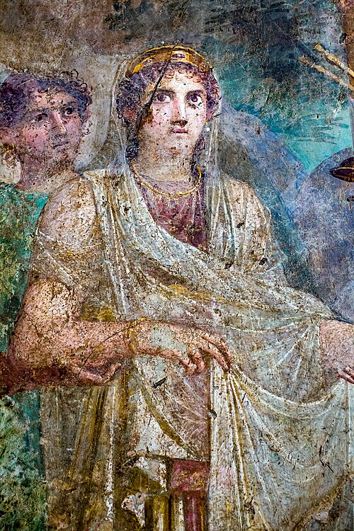
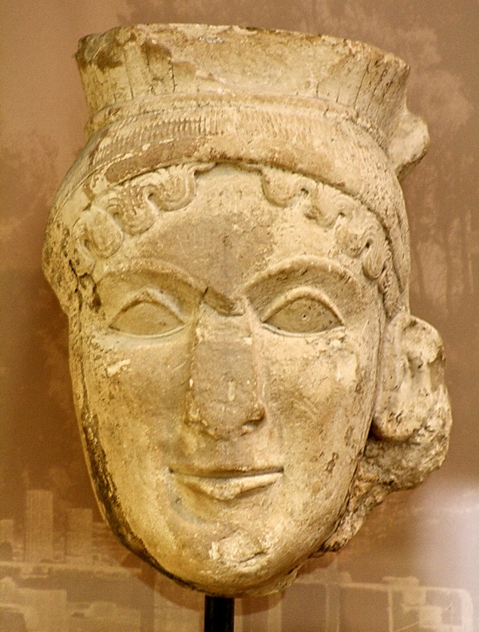

Ге́ра (др.-греч. Ἥρα, микен. e-ra; вер. 'охранительница, госпожа') — в древнегреческой мифологии богиня — покровительница брака, охраняющая мать во время родов. Одна из двенадцати олимпийских божеств, верховная богиня, сестра и жена Зевса. Согласно мифам, Гера отличается властностью, жестокостью и ревнивым нравом. Римский аналог Геры — богиня Юнона. Главные атрибуты этой богини — покрывало, диадема, павлин и гранат. Эпитеты Геры — Анфия, Гениоха (возница), Гополосмия в Элиде, Горгас, Европия в Аргосе, Зигия или Дзигия (устроительница свадеб).

Гера на античной фреске из Помпей.
Гера — третья дочь титана Кроноса и титаниды Реи, сестра и жена Зевса, сестра Деметры, Гестии, Аида и Посейдона. Вместе с остальными детьми Кроноса была проглочена своим отцом, а затем, благодаря хитрости Метиды и Зевса, была им извергнута обратно. Перед титаномахией Рея спрятала дочь у Океана и Тефиды, и впоследствии она будет мирить дядю и тётку в их ссорах. Гера — самая могущественная из богинь Олимпа, но и она подчиняется своему мужу Зевсу. Часто она вызывает у мужа гнев, в основном своей ревностью. Сюжеты многих древнегреческих мифов строятся вокруг бедствий, которые Гера насылает на любовниц Зевса и на их детей. Мучимая ревностью Гера запретила земной тверди давать Лето место для родов. Женщина обошла множество областей и островов, спрашивая «не хочет ли кто стать родиной [её] сыну. Но трепетали все земли от страха, никто не решился». Роды прошли на острове Делос, который согласился принять Лето. По верованиям древних греков остров плавал по морю и соответственно не мог считаться «земной твердью». По одной из версий мифа во время родов Лето Гера удерживала богиню родов Илифию на Олимпе, без которой на свет не мог появиться ни один младенец. После девяти дней схваток боги сжалились над возлюбленной Зевса и отправили на Олимп Ириду с наказом, во что бы то ни стало незаметно от Геры потребовать от Илифии помощи для Лето. Та убедила богиню родов спуститься на Делос, после чего сразу же родились Артемида с Аполлоном. Уже после рождения у Лето детей Гера внушила страсть к возлюбленной своего супруга великану Титию. Тот попытался обесчестить Лето, но был убит Аполлоном. Погубила Семелу, мать Диониса от Зевса. Верховный бог пообещал своей новой возлюбленной выполнить любое желание. Гера приняла образ няни Семелы Берои. В новом облике она убедила девушку попросить Зевса явиться во всём своём божественном блеске, либо в том виде, в котором он приехал свататься к Гере. Верховный бог был вынужден явиться на колеснице с молниями и громами и метнул перун. Семела от страха упала замертво, а Зевс извлёк шестимесячное дитя и зашил в своё бедро. После того, как через три месяца родился Дионис, оставшегося без матери ребёнка, будущего бога виноделия, Гермес отдал на воспитание сестре Семелы Ино и Афаманту. По одной версии мифа мальчика поместили в женскую часть дома, воспитывали как девочку и распускали слух, что Семела имела любовную связь со смертным, а не верховным богом. Таким образом они надеялись избежать внимания Геры. По другой версии они подчёркивали божественное происхождение своего воспитанника. И в том и в том случае супружеская пара Ино с Афамантом навлекли на себя гнев верховной богини Геры. По классической, описанной у Овидия, версии мифа Гера спустилась в подземное царство к богиням ненависти эриниям. Верховная богиня повелела им наслать безумие на Ио с Афамантом. Помешавшись рассудком Афамант убил сына Леарха. Ино схватила второго ребёнка Меликерта и бросилась с ним в море.

Голова статуи Геры из храма Геры в Олимпии. Известняк. Ок. 600 гг. до н. э. Археологический музей Олимпии.